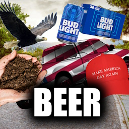
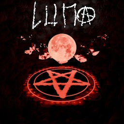

Discography
Rat Paste has 2 releases...

BEER
October 15, 2025
See lyrics & credits
Storytime:
BEER is a song meant to mock rednecks. Brody wrote the lyrics in about 2 days and strummed random chords on its guitar to mock country music.
Chronically Online originally had a different set of lyrics featuring the BANGER of a line "my lawyer advised me to stop being controversial, this is the worst band rehersal!"

Luna
April 18, 2026
See lyrics & credits
Storytime:
Right after the second chorus and before the last, you can hear a whisper-esque sound. That's Brody whispering stories about the whole situation.
Luna was recorded at three places: Green Light Studios (drums, bass, guitar, backing vox), Brody's cave (extra guitar, backing vox, percussion, synths), and at Brody/James's school (lead vox)
Between us, a little birdie told me that they are working on a new album..
Social media
Youtube